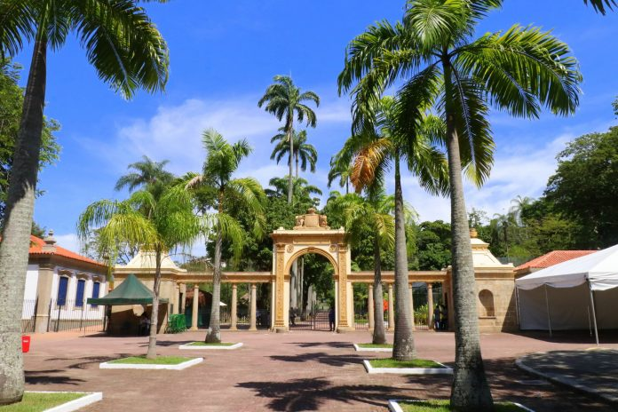
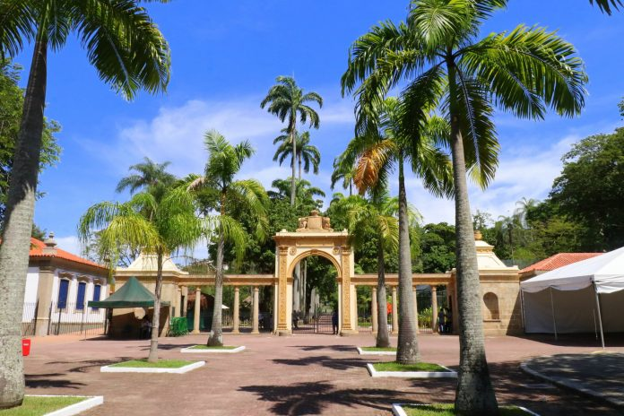

Sobre o Bioparque
Diferente de tudo que você conhece sobre o antigo zoológico, o BioParque do Rio veio escrever um novo capítulo na história da conservação de espécies no Brasil e ser o cenário de diversas lembranças inesquecíveis que você vai construir com sua família!
O BioParque do Rio está na Quinta da Boa Vista, no coração de São Cristóvão, também conhecido como Bairro Imperial. Local da antiga residência da família real, hoje a Quinta da Boa Vista reúne história, natureza, cultura e lazer, além de ser um dos maiores parques urbanos do Rio de Janeiro, com cerca de 155 mil metros quadrados.
O mundo mudou, por isso, não podíamos continuar o mesmo! Deixando de lado toda a antiga concepção de zoológicos e coleções de animais, o BioParque do Rio prioriza o bem-estar e a conservação de espécies!
Baseado no tripé de pesquisa, conservação e educação, contamos com uma equipe especializada que irá enriquecer sua visita com conhecimentos sobre a fauna e flora.
Aproveite visitas ilimitadas durante o ano, descontos especiais nos produtos do parque e horários exclusivos, além de contribuir diretamente para nossos projetos de conservação!
Você conhece os Animáximos? Eva e seus cinco amigos: Jack, Beca, Leo, Tom e Cati embarcam em aventuras radicais contra os vilões do meio ambiente em conteúdos que prometem muita diversão e aprendizado para a turminha.
Bem-vindo a um novo conceito de zoológico. Diferente de tudo que você conhece sobre o antigo zoológico, o BioParque do Rio veio escrever um novo capítulo na história da conservação de espécies no Brasil e ser o cenário de diversas lembranças inesquecíveis que você vai construir com sua família!
Fotos
 
